Tóm tắt
Một cái nhìn khái quát về các trình tự về quá trình chuẩn bị ban đầu cho đến kết thúc.
1. iPSW
Tải iPSW mà bạn cần xuống và iPSW mới nhất.
2. Extract files từ iPSW bản mới nhất
Extract Sep, Baseband, BuildManifest.
3. Set Nonce
Set boot nonce của SHSH vào iPhone.
4. Tiến hành
Kiểm trả lại và bắt đầu quá trình Futurerestore.
1. Chuẩn bị
1.1 Tạo một Folder tên là Futurerestore. Đây là thư mục bạn để tất cả các files để dễ thuận tiện trong quá trình làm
1.2 Tải 2 bản iPSW một firmware đang sign mới nhất và một firmware bạn muốn Futurerestore
iOS
1.3 Bỏ cả 2 vào thư mục Futurerestore
1.4 Đổi đuôi firmware mới nhất từ ".ipsw" thành ".zip"
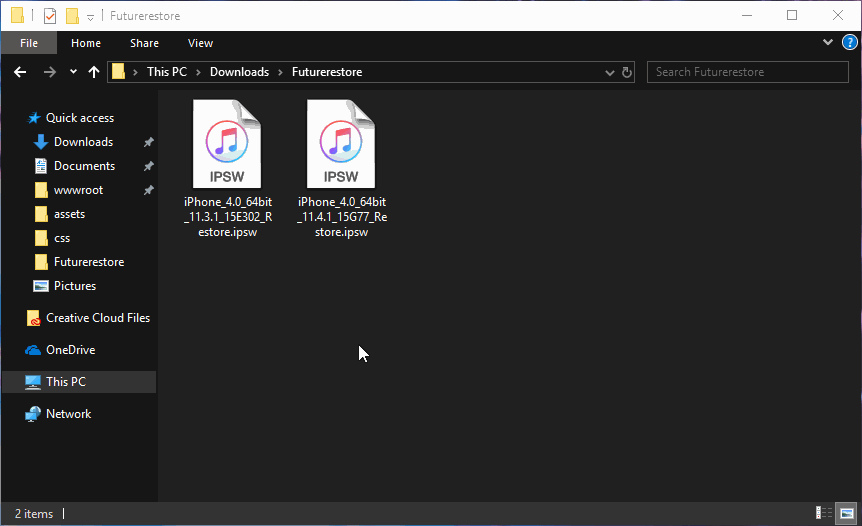
1.5 Mở zip và copy file BuildManifest.plist ra ngoài
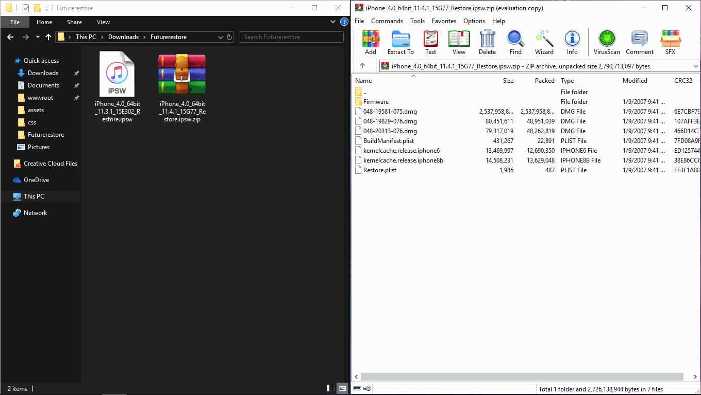
1.6 Vào trang The iPhone Wiki kéo xuống tới phần iPhone của bạn và tìm số baseband của bản mới nhất
→ Ví dụ firmware 11.4.1 mới nhất của iP5S có baseband là 8.55.00
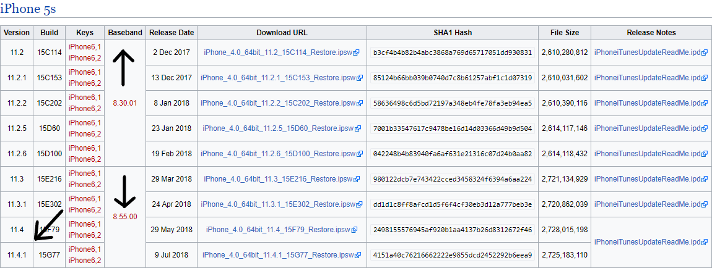
1.7 Vào Firmware chọn theo phiên bản baseband của bạn có đuôi là ".bbfw" và copy ra ngoài
→ Ví dụ 11.4.1 có baseband là 8.55.00 thì mình sẽ chọn Mav7Mav8-8.55.00.Release.bbfw
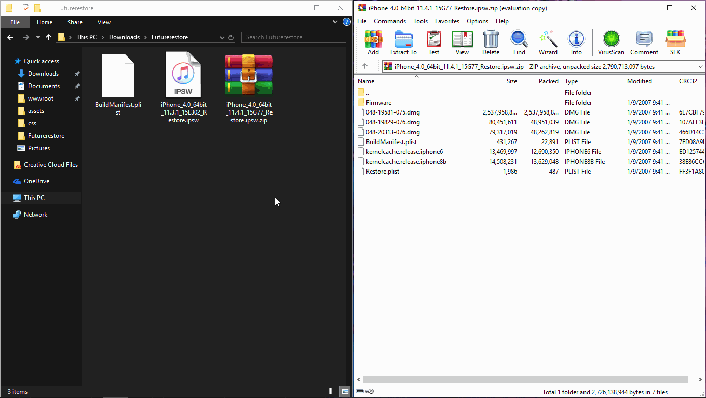
1.8 Tải Battery Memory System Status Monitor
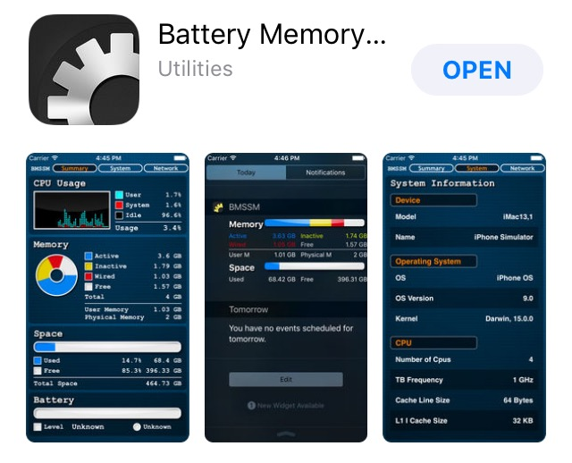
1.9 Mở ứng dụng và chọn phần System ngay trên cùng, bạn sẽ thấy Device Model của bạn
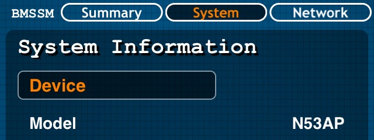
1.10 Vào tiếp all_flash, kéo xuống dưới cùng bạn sẽ thấy một loạt file có tên là sep-firmware, copy file sep có đuôi ".imp4" trùng với Device model của bạn ở bước 1.9
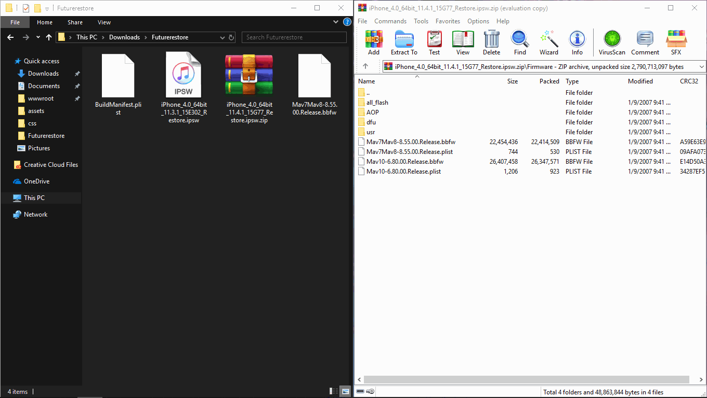
1.11 Tải shsh của phiên bản bạn muốn Futurerestore (Nếu bạn dùng tsschecker để lưu shsh thì vào tsssaver để check xem shsh của bạn có valid hay không
Kiểm tra SHSH
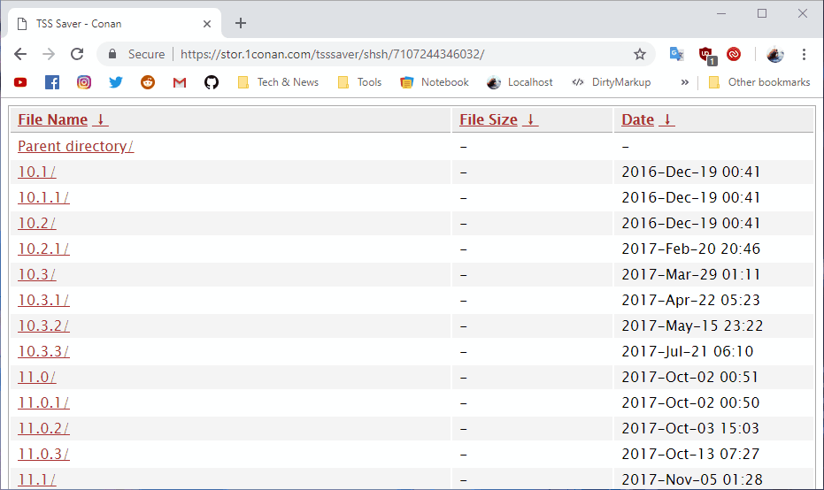
1.12 Tải Futurerestore fork của encounter (Nếu bạn tải bản chính chủ của tihmstar thì nên xoá đi vì nó không hoạt trên iOS 11)
Futurerestore
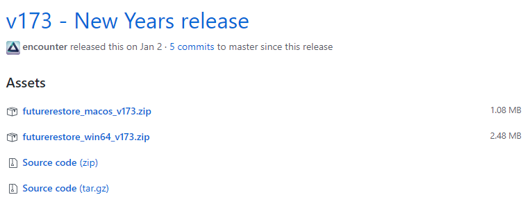
1.13 Copy shsh và extract Futurerestore fork đã tải vào Futurerestore
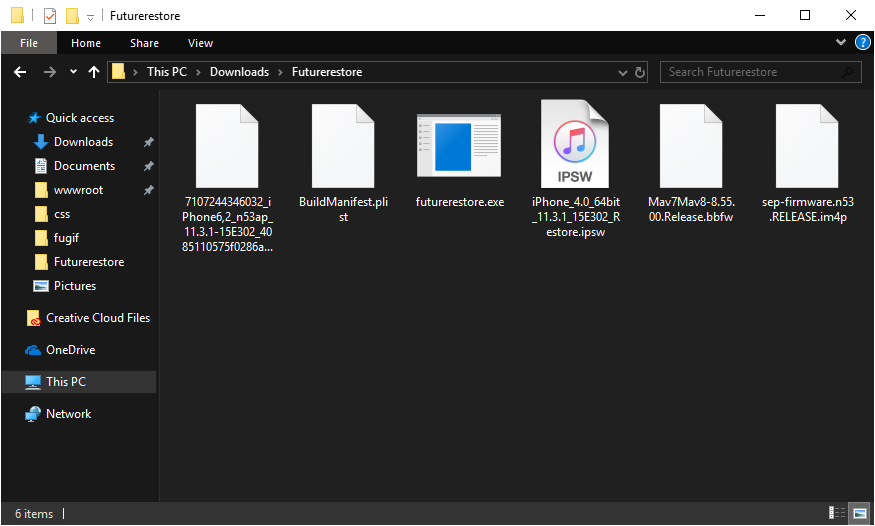
1.14 Xoá file zip và đổi tên file để dễ phân biệt
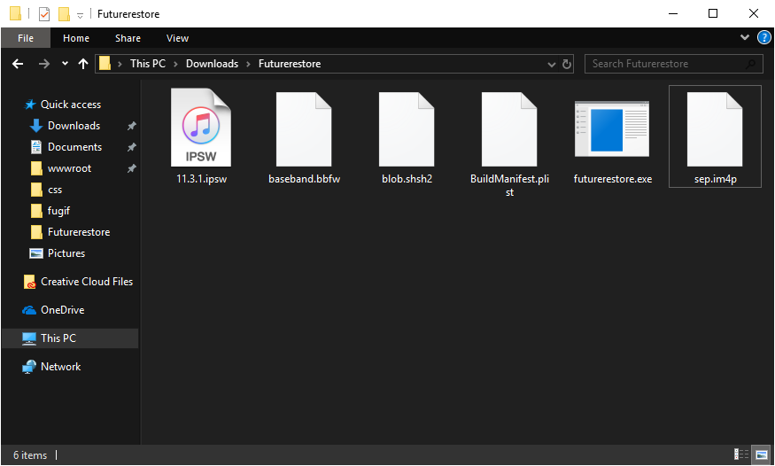
2. Set nonce
2.1 Mở file shsh của bạn dưới notepad, ctrl + f rồi gõ "gene", tìm đến "<string>0x......</string>"
→ Ví dụ shsh 11.3.1 của mình có nonce là 0xf44116d95df08a43
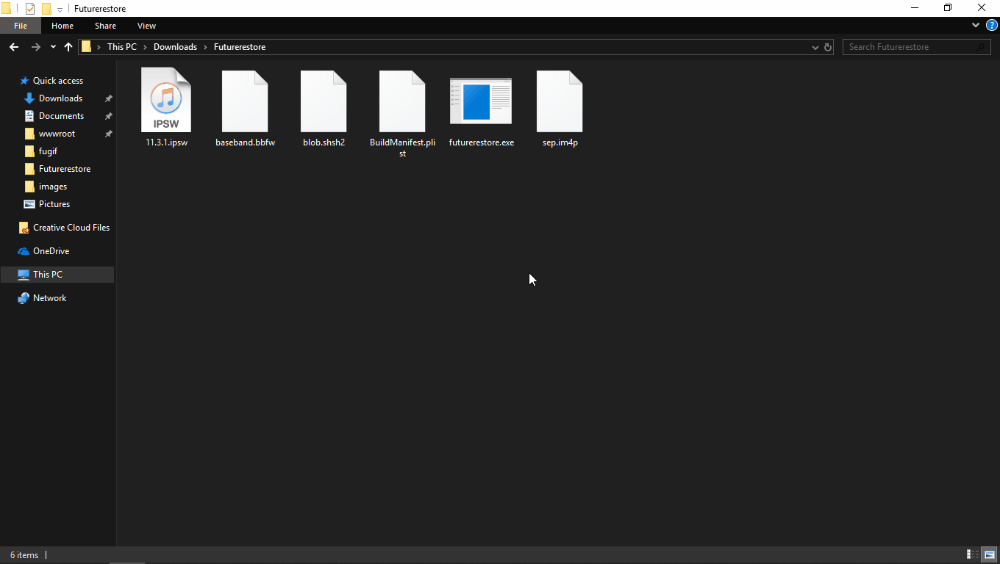
2.2 Set nonce
- iOS 10 → 10.2.1: Mở mterminal gõ
nvram com.apple.System.boot-nonce=0x.....
Hieus-iphone:~ mobile$ su
password: alpine
Hieus-iphone:/var/mobile root# nvram com.apple.System.boot-nonce=0x.....'
Ví dụ shsh của mình có generator là 0x66fd9ae6a407ddfa thì sẽ ghi là nvram com.apple.System.boot-nonce=0x66fd9ae6a407ddfa
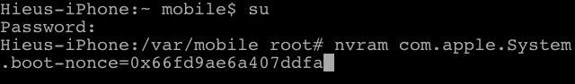
Gõ nvram -p để check lại
 iOS 10.3 → 10.3.3: Tải v0rtexNonce cài qua cydia impactor rồi mở app ghi đoạn generator của bạn vào
iOS 11 → 11.1.2: Tải NonceSet112 rồi làm tương tự như 10.3 → 10.3.3
iOS 11.2 → 11.3.1/11.4b3: Tải noncereboot1131UI hoặc electra1131 rồi làm tương tự như bước trên
iOS 10.3 → 10.3.3: Tải v0rtexNonce cài qua cydia impactor rồi mở app ghi đoạn generator của bạn vào
iOS 11 → 11.1.2: Tải NonceSet112 rồi làm tương tự như 10.3 → 10.3.3
iOS 11.2 → 11.3.1/11.4b3: Tải noncereboot1131UI hoặc electra1131 rồi làm tương tự như bước trên